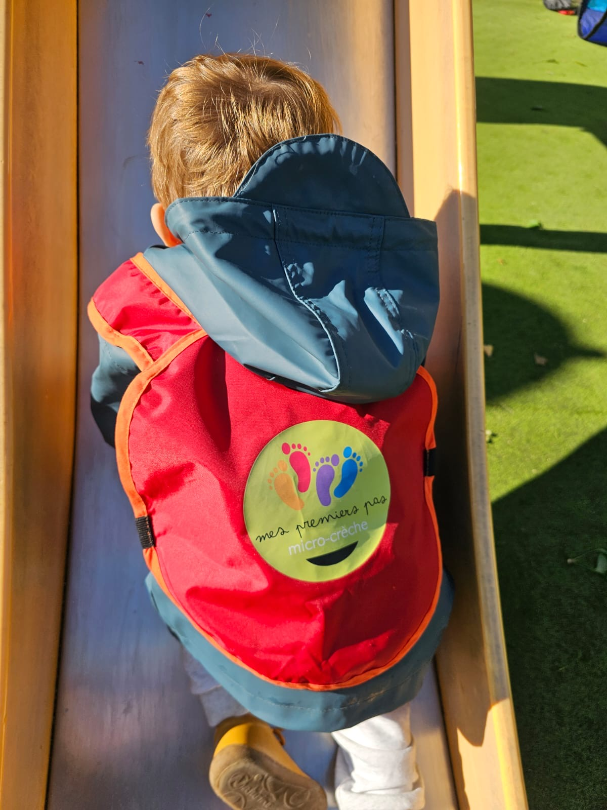
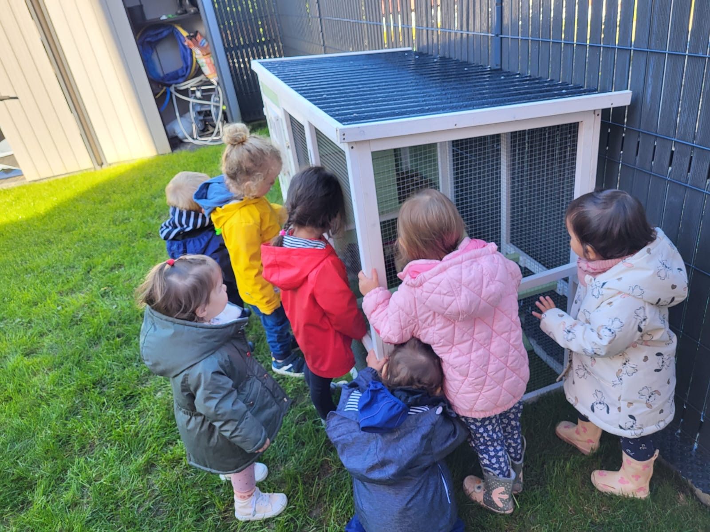

à propos de nous
Nos valeurs
L'enfant au coeur de priorité
Dans nos établissements, ce n'est pas à l'enfant de s'adapter à l'adulte et à ses contraintes, mais aux adultes de tout mettre en oeuvre pour soutenir le développement de chaque enfant.

Le respect de l'être humain
Chez Mes Premiers Pas, nous souhaitons profondément respecter l'être humain. En effet, chaque personne (familles, professionnels de terrain et professionnels de bureau, intervenants, partenaires...) ont leur propre histoire et perception du monde.

Communication
Nous souhaitons mettre au coeur de chaque relations humaines une communication positive, bienveillante et transparente. Effectivement, nous souhaitons des relations fluides pour le bien être de tous.

La bienveillance
Nous souhaitons mettre au coeur de chaque relations humaines une communication positive, bienveillante et transparente. Effectivement, nous souhaitons des relations fluides pour le bien être de tous.La bienveillance peut être définie comme "La qualité d'une volonté qui vise le bien et le bonheur d'autrui". Ainsi, chez Mes Premiers Pas, notre volonté est de viser le bien pour le bonheur des enfants, parents et collaborateurs.

Le respect de l'environnment
Nous souhaitons respecter l'environnement dans nos pratiques. Par exemple, nos surchaussures, nos charlottes, nos masques sont réutilisables et lavables. Nous utilisons également la vapeur et le vinaigre pour nettoyer et désinfecter.

Le projet d'établissement
Dans cette idée, nous souhaitons :
- Intergénération : nous souhaitons mettre au cœur de nos pratiques des activités intergénérationnelles (lien avec des EHPAD, des clubs du 3ème âge, etc).
- Faire participer les parents à la vie de la crèche : Décoration d'objets pour la crèche, ateliers autour de la parentalité...
- Être ancré dans chaque localité : intergénération, bibliothèques municipales, écoles maternelles...
- Documenter la vie de la crèche : photos, exposition des œuvres d'arts des enfants, citations des enfants, blog et page facebook...
- Améliorer continuellement notre pratique : nous souhaitons également nous documenter régulièrement : livres, articles...
- Une salle de vie avec motricité et jeux libre : Chez Mes Premiers Pas, nous pensons qu'un enfant libre de ses jeux et de sa motricité est un enfant acteur de sa journée et plus globalement de son développement.
- Des espaces dédiés à la nature : Dans la même dynamique que notre volonté de respecter l'environnement, nous souhaitons que les enfants soient proches de la nature en leur proposant régulièrement de sortir, et nous souhaitons également leur proposer des activités en lien avec la nature (potager par exemple).
- Des espaces dédiés à la création : Nous souhaitons, avec des objets de récupération par les familles ou les collaborateurs, avoir des espaces pour créer de nouveaux objets destinés à la décoration ou aux activités.
- Des espaces dédiés à l'imagination : Chez Mes Premiers Pas, nous affectionnons particulièrement lire des histoires. Lire des histoires est essentiel pour développer l'imagination chez les plus petits.
- Des espaces dédiés à la détente : Entre les moments forts des petits, il est important de prendre le temps d'avoir des moments cocooning et de détente pour calmer l'excitation et rythmer la journée.
- Des espaces dédiés à la communication : En lien avec notre valeur de communication, nous souhaitons dédier des espaces pour favoriser une communication positive et non violente.
Dans cette idée, nous souhaitons :
- Intergénération : nous souhaitons mettre au cœur de nos pratiques des activités intergénérationnelles (lien avec des EHPAD, des clubs du 3ème âge, etc).
- Faire participer les parents à la vie de la crèche : Décoration d'objets pour la crèche, ateliers autour de la parentalité...
- Être ancré dans chaque localité : intergénération, bibliothèques municipales, écoles maternelles...
- Documenter la vie de la crèche : photos, exposition des œuvres d'arts des enfants, citations des enfants, blog et page facebook...
- Améliorer continuellement notre pratique : nous souhaitons également nous documenter régulièrement : livres, articles...
- Une salle de vie avec motricité et jeux libre : Chez Mes Premiers Pas, nous pensons qu'un enfant libre de ses jeux et de sa motricité est un enfant acteur de sa journée et plus globalement de son développement.
- Des espaces dédiés à la nature : Dans la même dynamique que notre volonté de respecter l'environnement, nous souhaitons que les enfants soient proches de la nature en leur proposant régulièrement de sortir, et nous souhaitons également leur proposer des activités en lien avec la nature (potager par exemple).
- Des espaces dédiés à la création : Nous souhaitons, avec des objets de récupération par les familles ou les collaborateurs, avoir des espaces pour créer de nouveaux objets destinés à la décoration ou aux activités.
- Des espaces dédiés à l'imagination : Chez Mes Premiers Pas, nous affectionnons particulièrement lire des histoires. Lire des histoires est essentiel pour développer l'imagination chez les plus petits.
- Des espaces dédiés à la détente : Entre les moments forts des petits, il est important de prendre le temps d'avoir des moments cocooning et de détente pour calmer l'excitation et rythmer la journée.
- Des espaces dédiés à la communication : En lien avec notre valeur de communication, nous souhaitons dédier des espaces pour favoriser une communication positive et non violente.